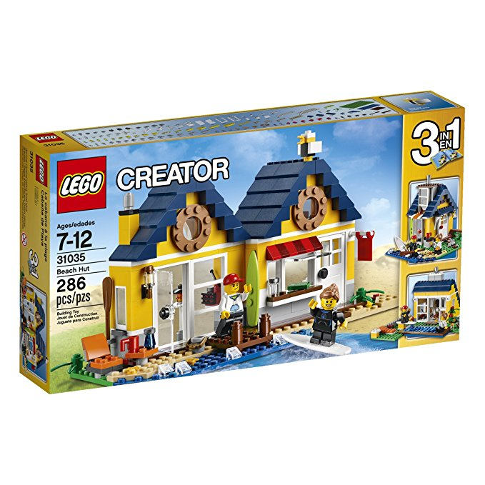
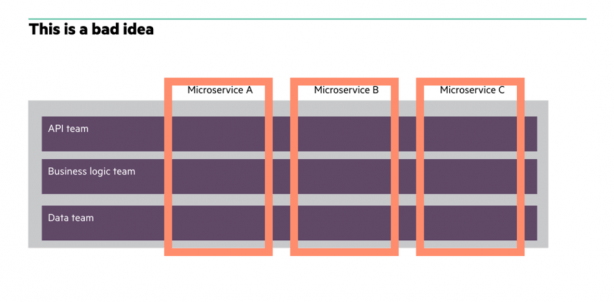
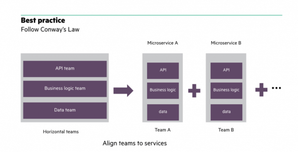

Effective
Microservices
Defining “Effective”
Solve Business Problem
Minimize Outages
Fast Response Times
Cost Effective
Deploy Easily and Regularly

Defining “Microservice”
Monolith
Nanoservice
Microservice

Gotchas
Ineffective Service Boundaries
More Info
No Automation
More Info
No Logging and Monitoring
More Info
Ineffective Org and Team Structure
Conway’s Law: Organizations which design systems are constrained to produce designs which are copies of the communication structures of these organizations.
Ineffective Org and Team Structure

Ineffective Org and Team Structure

Lacking DevOps Culture
More Info